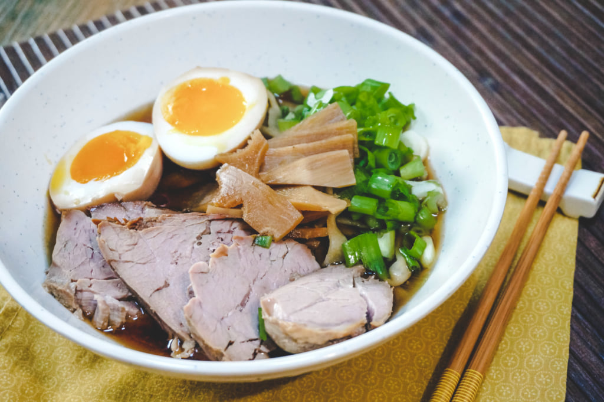

Ichiraku Ramen Recipe

Description
Naruto has to face various difficulties, but nothing warms his heart like a bowl of ramen. With no mother to cook for him, instant ramen noodles are his favourite meal, but when he is invited to his favourite restaurant, Ichiraku, one bowl is never enough! Ramen is the soup that cheers his soul, and that’s no surprise. Flavourful, warm, nourishing, and filling, ramen is a classic example of Japanese comfort food to be enjoyed!
Ingredients
- 6 portions ramen noodles, fresh or instant
- Soy-marinated eggs
- Marinated bamboo shoots
- Chopped green onion
Soy Broth
- 3 l Water
- 900 g chicken bones
- 450 g boneless pork shoulder or loin
- 3 cloves garlic, peeled
- 1 piece ginger, sliced
- 3 green onions, roughly chopped
- 250 ml soy sauce
- 60 ml sake
- 2 tbsp mirin
Chashu Sauce
- 160 ml water
- 80 ml sake
- 80 ml soy sauce
- 3 tbsp sugar
Steps
- Rinse the chicken bones in cold water, then place them in a large pot with the water, pork, garlic, ginger, and green onions.
- Bring to the boil, removing the dirt that comes to the surface. Lower the heat and simmer with the pot covered for around two hours.
- Remove the pork, then strain off the broth, getting rid of the other ingredients.
- Add the soy sauce, sake, and mirin, then leave to simmer with the pot covered until ready to serve.
- Mix the ingredients for the chashu sauce in a large pan. Add the pork, then bring to the boil over a medium heat. Cover with a lid, leaving slightly open so the steam can escape, then reduce the heat to low and simmer for around 30 minutes, turning the meat from time to time until just a little bit of liquid is left.
- Remove the lid, stay with the pan, and watch the liquid simmer until bubbles start to appear.
- Turn the pork to cover it completely with the sauce, then remove from the pan and slice thinly.
- When ready to serve, cook the ramen following the instructions on the packaging. Divide the broth into six bowls, then add the noodles, pork, bamboo shoots, soy-marinated eggs, and green onions.
Want to check out the other recipes? Click here